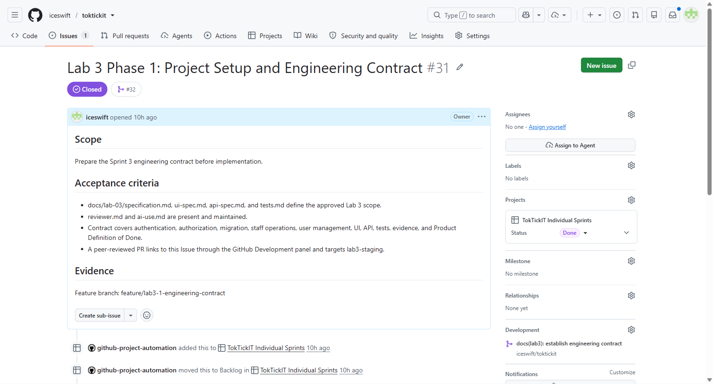
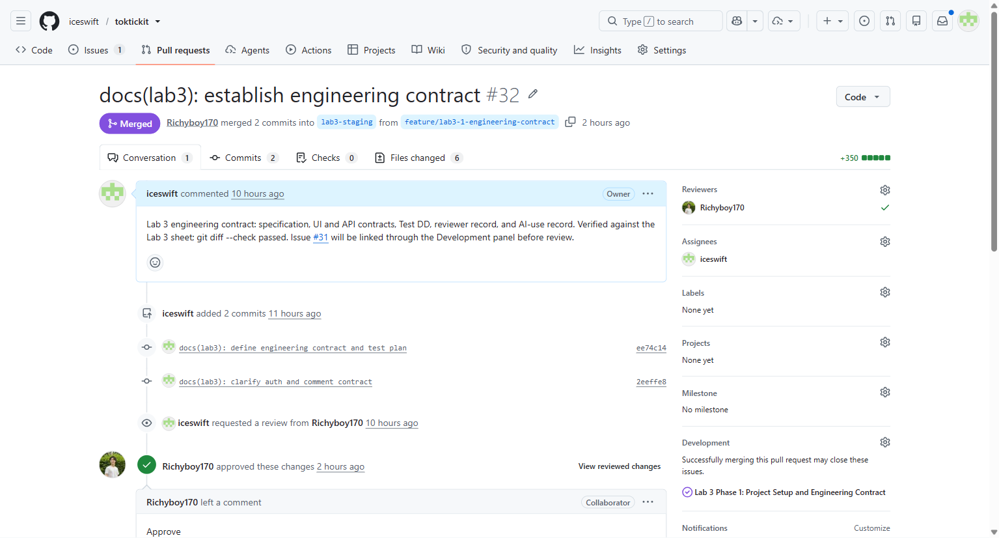
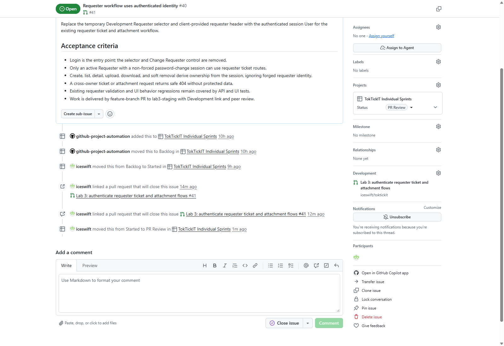
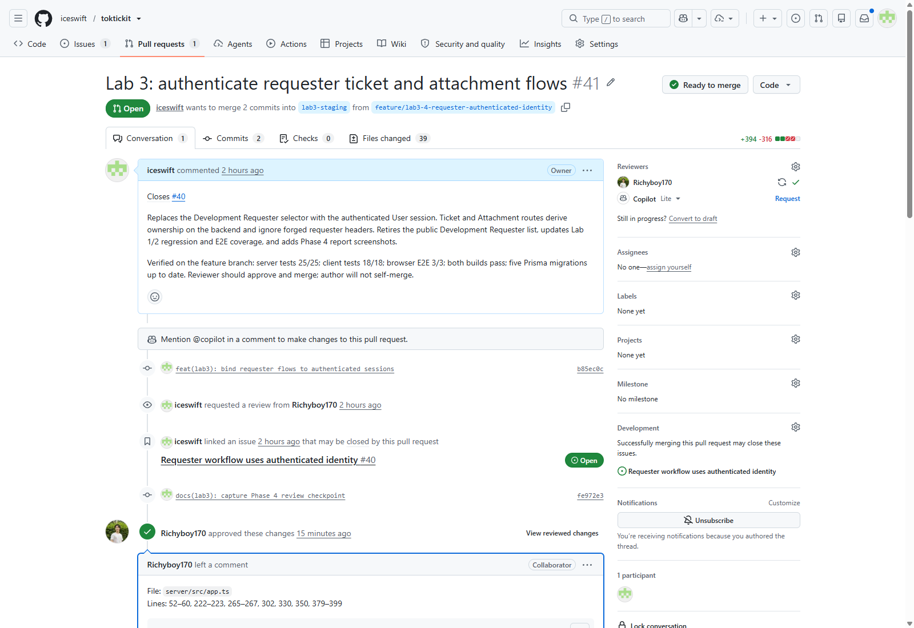
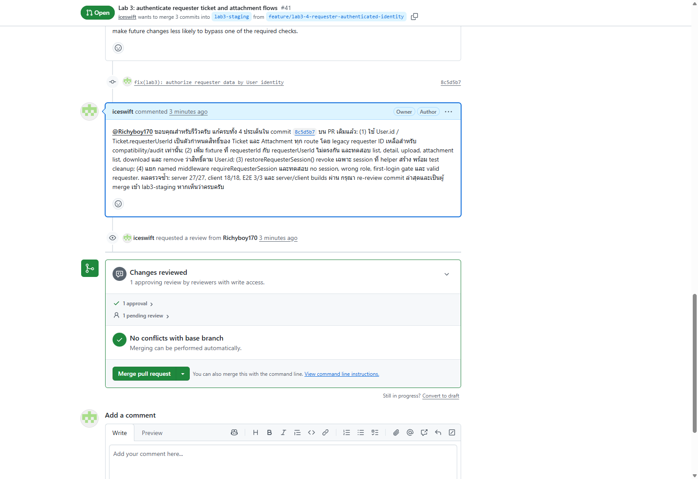
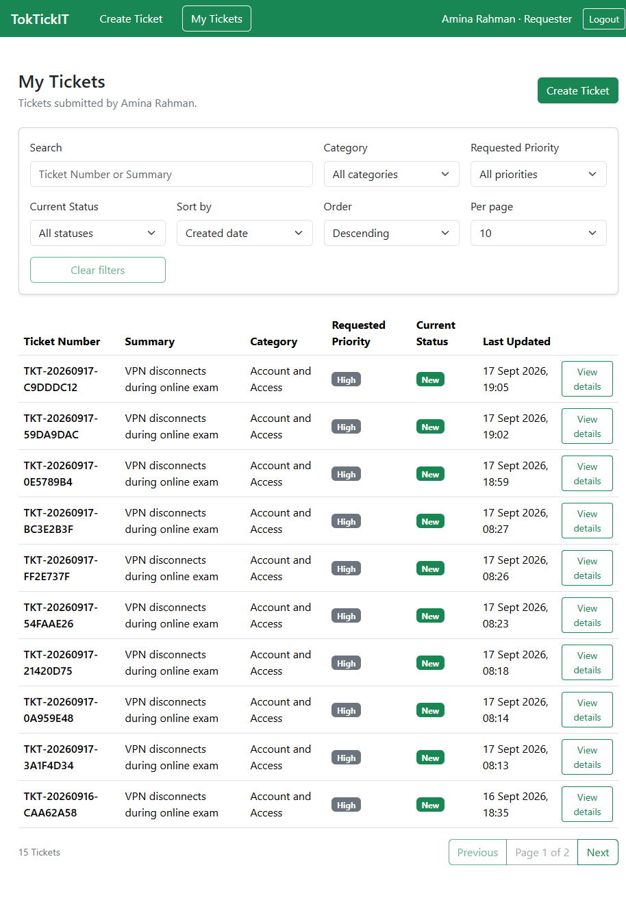
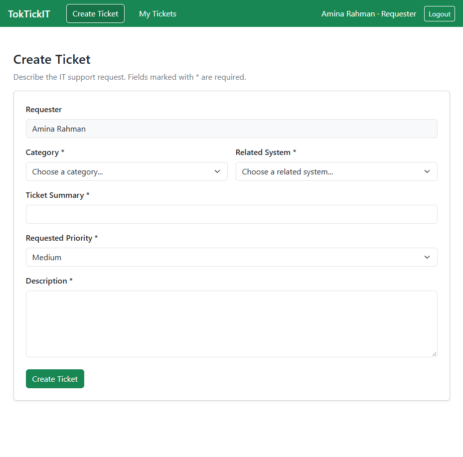
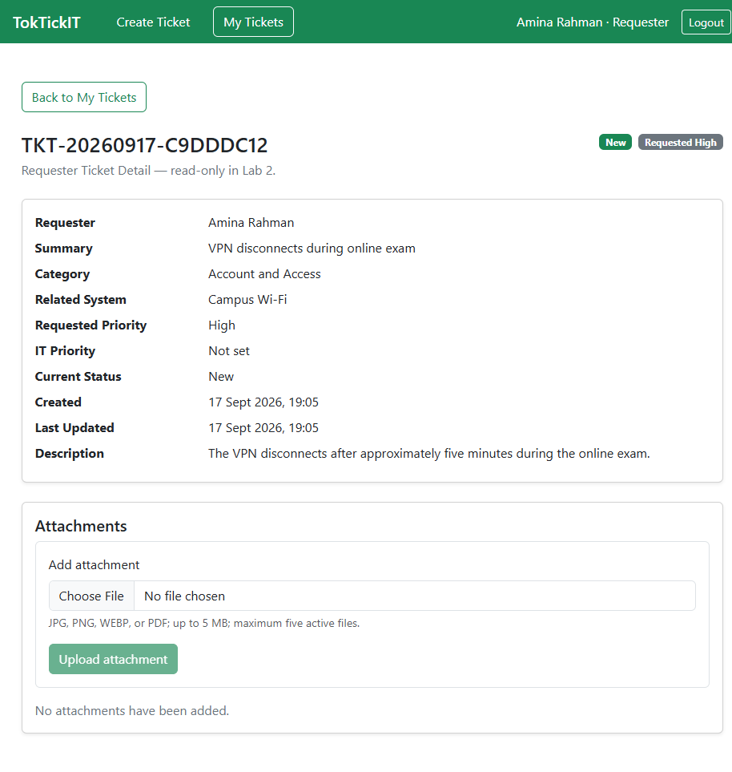
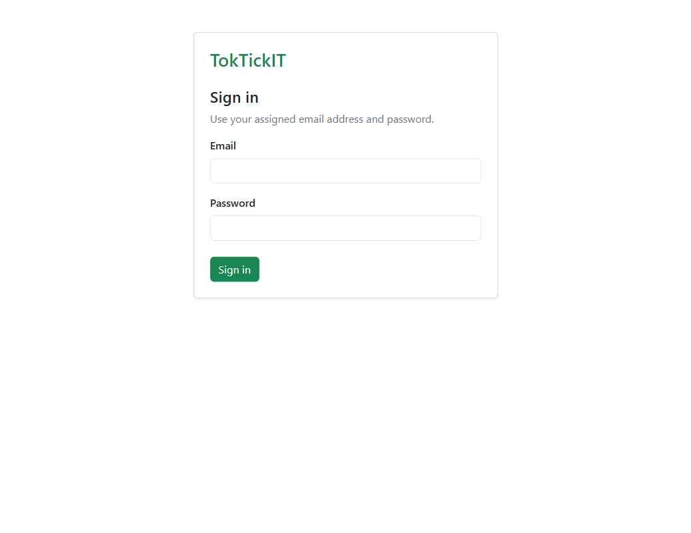
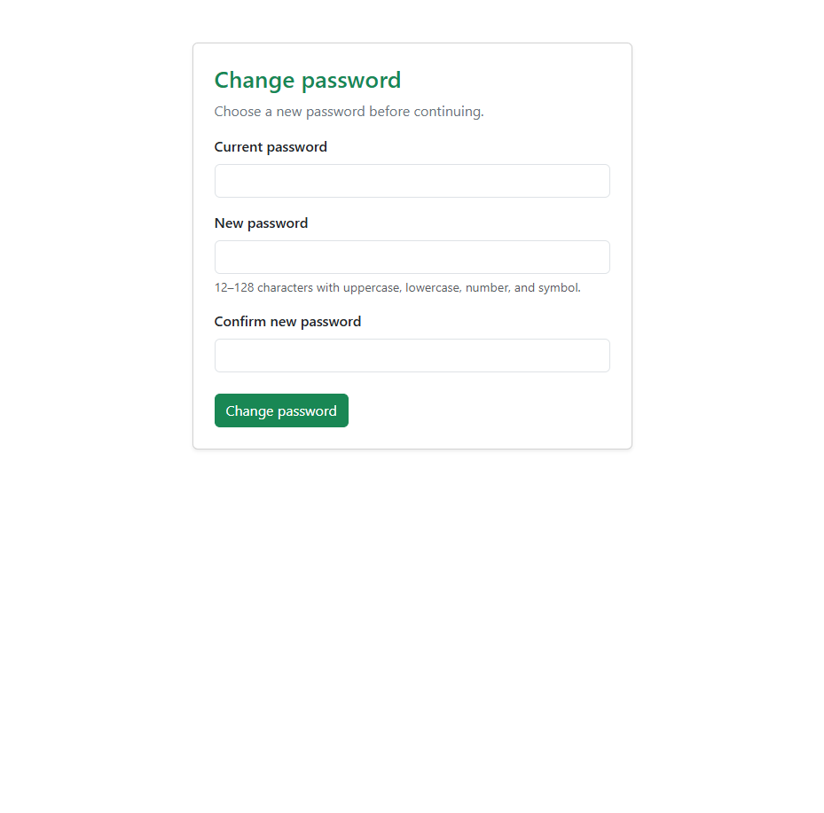

Contents
Answer Part 1: Git Use with Engineering Workflow
Phase 1: Project Setup and Engineering Contract
- Issue #31 defined the Phase 1 scope and acceptance criteria.
- Feature branch
feature/lab3-1-engineering-contractwas reviewed through PR #32 intolab3-staging. Richyboy170approved and merged PR #32. The merge commit is42079a7.- The Issue Development panel directly lists the merged PR, and GitHub Project automation moved the closed Issue from
StartedtoDone.


lab3-staging. The right Development panel links Issue #31 directly. This proves the peer-review and reviewer-merge requirements.Phase 4: Authenticated Requester Workflow — completed staging review
Issue #40 is linked directly through GitHub Development to PR #41. The feature branch targeted lab3-staging. Richyboy170 approved the initial changes and left four technical suggestions in one review comment. The author addressed all four in commit 8c5d5b7, replied on PR #41, and re-requested review. Richyboy170 then re-checked, approved, and merged PR #41 into lab3-staging as d48c2c8. After the acceptance criteria were confirmed, Issue #40 was closed as completed and its Project status was moved to Done.

PR Review board state and the direct Development link to PR #41, proving Issue–PR traceability at the review checkpoint. This is not final Done evidence.Phase 5: IT Staff Ticket Queue — completed staging review
Issue #43 defined the IT Staff queue contract and was implemented on feature/lab3-5-it-staff-ticket-queue. The feature PR, #44, targeted lab3-staging; its description referenced Issue #43 and GitHub recorded PR #44 in the Issue activity. The implementation provides GET /staff/tickets with authenticated IT Staff/Administrator access, validated search/filter/sort/page queries, pagination metadata, and a responsive queue UI. Richyboy170 approved and merged PR #44 into lab3-staging as f1f51c8. After merge, Issue #43 was closed as completed and its Project status moved from PR Review to Done.

Richyboy170's initial approval and technical review comment, while the right Development panel links Issue #40. The author is addressing the comment on the same branch; this image does not claim a final reviewer merge.
Richyboy170 after commit 8c5d5b7. The final re-check, approval, and reviewer-performed merge are recorded in PR #41 and merge commit d48c2c8.Evidence register and final-completion check
The records above are verified Phase 1, Phase 4, and Phase 5 staging facts. The following Part 1 evidence must be added only after it exists on the final main branch: complete Lab 3 feature-to-staging and staging-to-main commit history; final Kanban with every Lab 3 Issue in Done; rendered README.md and .gitignore; and the final repository tree. The docs/lab-03/reviewer.md record distinguishes completed review from pending review.
Answer Part 2: Specification and Definition of Done
The reviewed Phase 1 contract is maintained in docs/lab-03/specification.md, ui-spec.md, api-spec.md, and tests.md. These documents define the approved Lab 3 scope before implementation.
Answer Part 3: Test DD and Traceability
Phase 4 checkpoint (feature branch, not final-main evidence): after addressing peer-review feedback, server API/unit/regression tests passed 27/27, client UI tests passed 18/18, and browser E2E tests passed 3/3. Both production builds passed. The five Prisma migrations were previously reported up to date; this review-fix run did not rerun migration status. The final Part 3 requirement remains pending until the complete suite is rerun on released main.
Phase 5 focused verification (feature branch, not final-main evidence): the staff queue API suite passed 3/3; the StaffTicketQueue UI suite passed 2/2; and both server TypeScript and client production builds passed. git diff --check also passed. These checks cover queue authorization, validated query handling, search/filter/sort/pagination metadata, valid empty responses, and explicit UI empty/no-results states. The final Part 3 requirement remains pending until the complete suite is rerun on released main.
Requester authorization tests exercise missing session (401), wrong role and first-login gate (403), forged identity header, cross-owner Ticket and Attachment access (404), and deliberately mismatched legacy/migrated ownership. The authenticated User.id and Ticket.requesterUserId determine ownership; legacy requester IDs remain only as compatibility/audit fields. Test cleanup also revokes helper-created sessions.



Answer Part 4: AI Use and Reflection
The maintained prompt log and the student reflection are in docs/lab-03/ai-use.md. This section will be rendered into the final PDF after all verification notes are complete.
Answer Part 5: Working Login and Password Change UI
Phase 3 authentication was peer-reviewed in PR #39. Phase 4 browser verification confirmed that a requester using an initial password reaches the forced password-change screen before the requester shell; logout returns to Sign in. The formal final-main test output is still pending.


Answer Part 6: Working IT Staff Ticket Queue UI
Phase 5 delivers the queue for authenticated IT Staff, with Administrator read-only access. The UI exposes labelled search, status/requested-priority/IT-priority filters, sorting, pagination controls, a compact desktop table, responsive mobile cards, and explicit loading, empty, no-results, forbidden, and failure feedback. The server endpoint defaults to updatedAt desc, returns items, page, pageSize, totalItems, and totalPages, and accepts only page sizes 10, 20, or 50. Completion workflow evidence is recorded in Issue #43, PR #44, and docs/lab-03/reviewer.md.
Answer Part 7: Working IT Staff Ticket Detail UI
Pending Phase 6 implementation and verification.
Answer Part 8: Working Administrator User Management UI
Pending Phase 7 implementation and verification.
Answer Part 9: Zen Green UI and Responsive Evidence
Pending responsive UI work and desktop/tablet/mobile evidence.